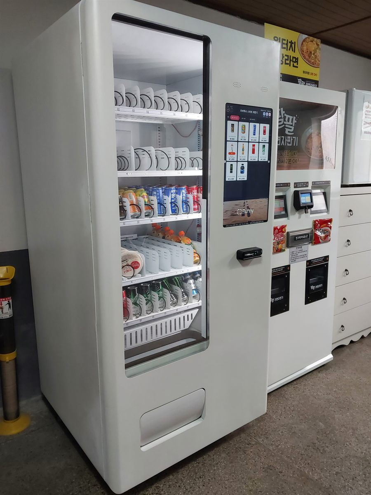

영등포구 무인자판기 설치
원룸촌 건물 1층 음료·라면 자판기 2대

원룸촌에 자판기를 놓을 때 기준이 되는 시각은 밤 열한 시입니다. 그 전까지는 편의점도 있고 식당도 열려 있어서 굳이 자판기를 쓸 이유가 없습니다. 수요는 가게들이 하나씩 문을 닫고 난 다음, 들어오는 길에 뭔가를 사지 못한 사람에게서 생깁니다. 그래서 낮 시간대 통행량만 보고 자리를 정하면 거의 틀립니다.
이번 영등포구 현장도 그렇게 잡았습니다. 원룸과 투룸이 섞인 다세대 건물이 붙어 있는 골목이었고, 건물주께서 처음 보여 주신 자리는 건물 바깥 주차장 쪽이었습니다. 눈에는 잘 띄는 자리지만 비를 맞고 겨울에 얼어붙습니다. 결국 1층 안쪽 공용 공간으로 옮겼습니다. 어떤 기준으로 그렇게 정했는지부터 적겠습니다.
영등포구 원룸촌에 맞는 구성
혼자 사는 분들이 늦게 찾는 것은 품목이 분명합니다. 음료와 라면, 그리고 숙취음료 정도입니다. 그래서 냉장 한 대만 놓지 않고 즉석 라면 자판기를 한 대 더 붙였습니다. 왼쪽 냉장기는 아래 두 단을 캔·병 음료로 길게 채우고, 위 두 단에 컵라면과 과자를 올렸습니다. 오른쪽 기계는 컵라면을 뽑으면 그 자리에서 뜨거운 물이 나오고 젓가락도 함께 나옵니다. 두 대가 붙어 있으면 음료만 사러 온 사람도 라면 쪽으로 한 번 눈이 갑니다.
자리는 현관과 계단 사이, 우편함 맞은편 벽을 썼습니다. 들어오는 사람이 반드시 지나가는 길이면서, 통행 폭을 막지 않는 폭이 나왔습니다. 결제는 카드와 간편결제만 열었습니다. 밤에 현금을 꺼내 쓰는 분이 거의 없고, 현금함은 관리할 일만 늘립니다. 재고와 매출은 원격으로 보기 때문에 건물주께서 매일 내려와 칸을 세어 볼 필요가 없습니다.
- 기종 — 냉장 1대 + 즉석 라면 자판기 1대, 벽을 따라 나란히
- 품목 — 아래 두 단은 캔·병 음료와 생수, 위 두 단은 컵라면·과자, 라면기는 컵라면 전용
- 자리 — 현관과 계단 사이 실내 벽면, 통행 폭을 남기고 설치
- 결제·관리 — 카드·간편결제 전용, 현금함 없음, 재고·매출 원격 확인
놓고 나서 좋았던 것, 걸렸던 것
좋았던 쪽부터 적습니다. 밤 시간대에 실제로 쓰입니다. 낮에는 거의 조용하다가 열한 시 이후로 움직임이 생기는 패턴이 꾸준했습니다. 건물주 입장에서는 빈 벽 하나를 쓴 것이고, 사람이 직접 지키는 일이 전혀 없다는 점이 가장 컸습니다. 실내라 눈·비를 맞지 않으니 기계가 상할 일도 줄었습니다.
걸렸던 점도 솔직히 적습니다. 첫째, 라면 자판기를 놓으면 쓰레기가 생깁니다. 다 먹은 용기를 그 자리에 두고 가는 분이 반드시 나오므로, 뚜껑 있는 수거함을 옆에 두고 치우는 주기를 정해 두셔야 합니다. 이걸 안 정하면 몇 주 만에 민원이 생깁니다. 둘째, 공용 공간이라 늦은 시간 소리가 문제가 될 수 있습니다. 1층 세대 현관과 바로 맞닿은 벽은 피하는 쪽이 안전합니다. 셋째, 원룸 세대 수가 적으면 두 대를 채우기 어렵습니다. 건물 한 동만 보고 계시다면 냉장 한 대로 먼저 시작하시는 편이 낫습니다.
영등포구, 이런 자리가 잘 맞습니다
영등포구는 한 구 안에 성격이 다른 동네가 여럿 들어 있습니다. 여의도동은 사무실과 금융기관이 모여 평일 낮에만 사람이 몰리고, 영등포동 일대는 역과 시장 상권이 붙어 밤까지 이어집니다. 신길동과 도림동은 다세대·원룸이 촘촘한 주거지라 늦은 시간 흐름이 생기고, 대림동은 상가와 주거가 섞여 주말까지 움직임이 이어집니다. 당산동은 역세권 오피스텔이 많고, 문래동은 공장과 작업실이 섞인 구조입니다.
원룸 건물로 보면 한 동에 세대가 20호 이상 되거나, 비슷한 건물이 골목으로 붙어 있는 자리가 잘 맞습니다. 옆 건물 사는 분도 지나가다 쓰기 때문입니다. 반대로 골목 안쪽 깊은 곳이거나 출입이 통제되는 건물이면 쓰는 사람이 그 건물 세대로만 한정됩니다. 그런 경우에는 음료 한 대로 작게 잡는 쪽을 권해 드립니다.
영등포구 서비스 지역
여의도동 · 영등포동 · 당산동 · 문래동 · 양평동 · 신길동 · 대림동 · 도림동
영등포구 전역에서 방문 상담이 가능합니다. 맞닿은 동작구·구로구·양천구와 마포구 방면도 같은 담당자가 함께 다닙니다. 지역별 안내는 영등포구 무인자판기 설치 안내 페이지에서 보실 수 있습니다.
영등포구 무인자판기, 이렇게 시작하시면 됩니다
전화나 상담 신청으로 건물 주소만 남겨 주시면 됩니다. 담당자가 나가서 놓을 자리의 벽면 길이와 천장 높이, 콘센트 위치, 사람 동선을 봅니다. 원룸 건물은 여기에 세대 수와 출입 방식을 한 가지 더 확인합니다. 외부인이 1층까지는 들어올 수 있는 구조인지에 따라 쓰는 사람 수가 크게 달라지기 때문입니다. 설치일이 정해지면 끝이며, 설치비는 받지 않습니다. 기계는 구입·렌탈·임대 중에서 고르실 수 있습니다.
건물 여러 동을 가지고 계시다면 한 동에 먼저 놓아 보시는 방법이 있습니다. 두어 달 지나면 어떤 품목이 먼저 비는지, 시간대가 어떻게 갈리는지 숫자로 보입니다. 그 숫자를 보고 다음 동을 정하는 쪽이 처음부터 여러 대를 넣는 것보다 안전합니다.
관련 검색어: 영등포구무인자판기 · 신길동자판기설치 · 대림동자판기 · 영등포원룸자판기 · 도림동무인자판기
※ 사진은 픽프리가 시공한 설치 사례이며, 글에 적힌 지역의 현장 사진은 아닙니다.
함께 많이 찾는 키워드
영등포구 무인자판기 · 영등포구 자판기 설치 · 영등포구 자판기 임대 · 영등포구 자판기 렌탈 · 서울 무인자판기 · 서울 자판기 설치 · 여의도 자판기 · 영등포동 자판기 · 당산동 자판기 · 문래동 자판기 · 양평동 자판기 · 신길동 자판기 · 대림동 자판기 · 도림동 자판기 · 원룸 자판기 · 원룸촌 자판기 · 오피스텔 자판기 · 다세대주택 자판기 · 라면 자판기 · 즉석라면 자판기 · 야식 자판기 · 냉장 자판기 · 생수 자판기 · 스마트 자판기 · 카드 자판기 · 간편결제 자판기 · 무인키오스크 설치 · 자판기 설치비용 · 자판기 원격관리 · 무인창업